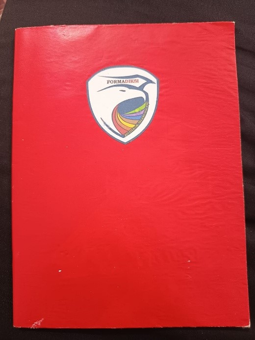
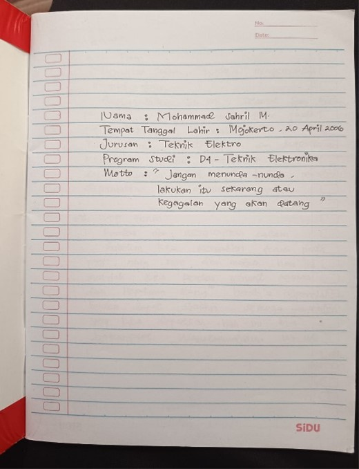

Barang Bawaan Wawancara
Open Recruitment Formadiksi Polinema Tahun 2026
- Tanda pengenal sesuai dengan ketentuan yang telah ditetapkan.
- Buku A5 sesuai dengan ketentuan yang telah ditetapkan.
- Alat tulis.
-
Formulir Pendaftaran Cetak
menggunakan HVS ukuran A4 dengan biodata yang telah
terisi lengkap.
Unduh Formulir_Pendaftaran.docx ↓ -
Surat Kesanggupan Cetak
menggunakan HVS ukuran A4.
- Biodata belum diisi atau masih kosong.
- Biodata akan diisi di tempat wawancara dengan dipandu oleh panitia.
Ketentuan Tanda Pengenal
- Menggunakan kertas buffalo berwarna merah.
- Ukuran 5 cm × 10 cm.
- Dipakai menggunakan peniti di bagian kanan dada.
- Ditulis menggunakan Tipp-Ex.
-
Tanda pengenal berisi:
- Nama
- Prodi
- Jurusan
Contoh Tanda Pengenal

Ketentuan Buku A5
- Berisi 38 lembar.
- Disampul kertas sukung berwarna merah (sama dengan 1 angkatan).
- Sampul buku diberi logo Formadiksi Polinema dengan ukuran 4 × 6 cm.
-
Halaman pertama berisi:
- Nama
- Tempat Tanggal Lahir
- Jurusan
- Program Studi
- Motto
Contoh Sampul dan Halaman Pertama Buku

Contoh Sampul Buku
Contoh Halaman Pertama Buku
Logo Formadiksi Polinema
Digunakan pada Sampul Buku A5 dengan ukuran 4 × 6 cm.
Unduh Logo
↓